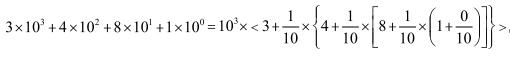
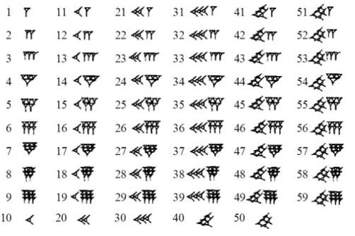

数海拾贝2
进位制是记数的方式，也称进位计数法或位制计数法。它帮助人们用有限的数字符号数目来表示所有的数值。一个进位制中可以使用的数字符号的数目称为基数或底数。一个基数为 n 的进位制，称为 n 进位制，现在最常用的进位制是 10 进位制，这种进位制通常使用十个阿拉伯数字（即 0-9）进行记数。由于人有十个手指，10 进位制最为直观，但不是唯一的。
在进位制当中，数位的概念很重要。一般说来，d 进位制有 d 个计数符号。10 进位制，d=10，16 进位制，d=16，等等，以此类推。一个任意四位数字 a3a2a1a0 意味着a3d3+a2d2+a1d1+a0d0。注意这里 a3a2a1a0 不是四个数相乘，而是四个数位。相应数位的 d 的幂次 0，1，2，3，是 d 进位制中的数字符号。注意任何一个不为零的数的零次幂都等于1。比如在 10进位制中的数字 3481有个、十、百、千四个数位，它的表达方式是:

16 进位制有 16 个数字符号，通常用 0–9 和 A–F 来表示。想一想:如果用 16 进位制来表达 10 进位的数字 3481，表达的方式应该是什么样子？是几位数？
今天我们使用的阿拉伯数字有十个数字符号，而古巴比伦的 60 进位制却有五十九个符号:

3481 这个数字用古巴比伦的 60 进位制表达，如正文中所说是个两位数【58】【1】。
但是古巴比伦没有表示 0 的符号。在表达数值时，0 是靠空格来表示的。这种方法在表达 60，600，6000（1，1 后面加一个空位，1 后面加两个空位）等时就变得含糊不清了。这个问题直到 8 世纪印度人引入 0 的符号才得到彻底解决。